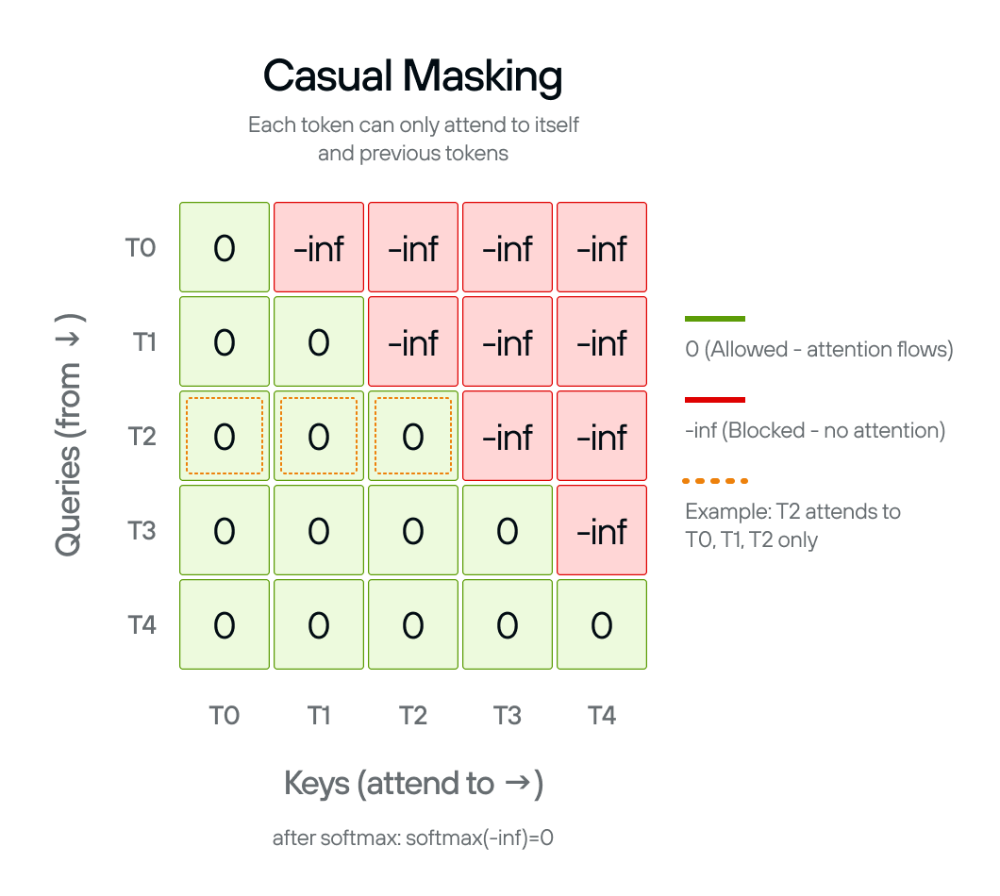
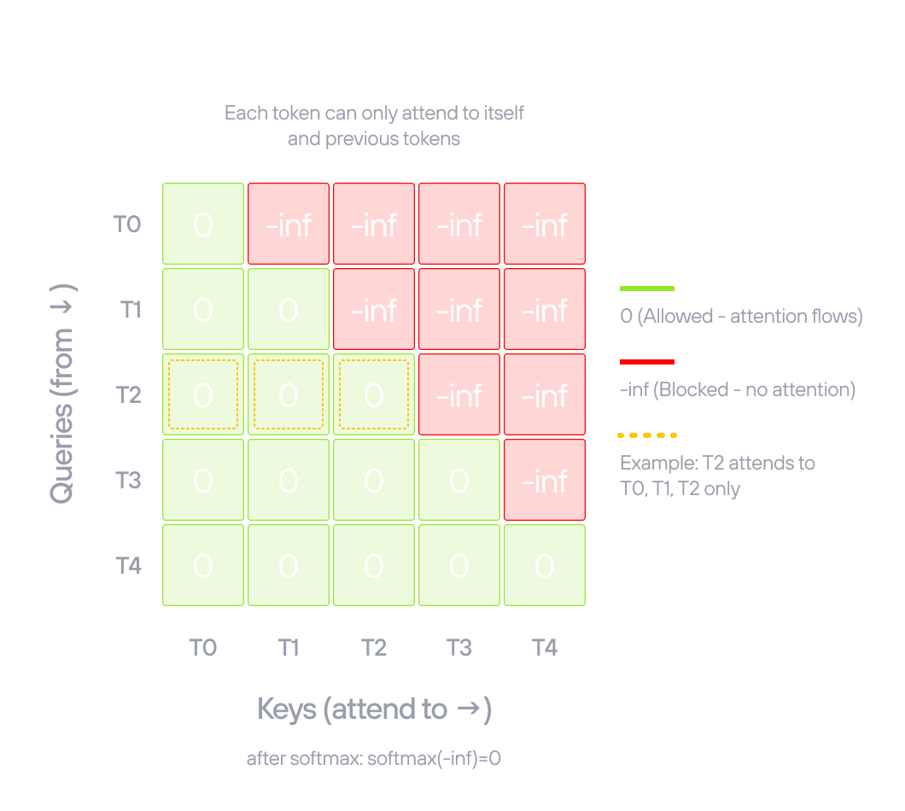

Build an LLM from scratch in MAX
Transformer models power today’s most impactful AI applications, from language models like ChatGPT to code generation tools like GitHub Copilot. Maybe you’ve been asked to adapt one of these models for your team, or you want to understand what’s actually happening when you call an inference API. Either way, building a transformer from scratch is one of the best ways to truly understand how they work.
This guide walks you through a complete GPT-2 implementation using the MAX Python API. Each section explains a component of the model—embeddings, attention mechanisms, feed-forward layers—and shows exactly how it’s implemented in the GitHub repository.
Why GPT-2?
It’s the architectural foundation for modern language models. LLaMA, Mistral, GPT-4; they’re all built on the same core components you’ll find here:
- multi-head attention
- feed-forward layers
- layer normalization
Modern variants add refinements like grouped-query attention or mixture of experts, but the fundamentals remain the same. GPT-2 is complex enough to teach real transformer architecture but simple enough to implement completely and understand deeply. When you grasp how its pieces fit together, you understand how to build any transformer-based model.
Learning by example: Rather than abstract theory, this tutorial walks through a complete, working implementation and explains how each component works and why it’s designed that way.
Why MAX?
Traditional ML development often feels like stitching together tools that weren’t designed to work together. Maybe you write your model in PyTorch, optimize in CUDA, convert to ONNX for deployment, then use separate serving tools. Each handoff introduces complexity.
MAX Framework takes a different approach: everything happens in one unified system. You write code to define your model, load weights, and run inference, all in MAX’s Python API. The MAX Framework handles optimization automatically and you can even use MAX Serve to manage your deployment.
The GPT-2 implementation in this guide loads pretrained weights from Hugging Face, implements the architecture, and runs text generation, all in the same environment.
What you’ll explore
Each section explains a component of the model through the working code in
gpt2.py:
| Section | Component | What you’ll learn |
|---|---|---|
| 1 | Model configuration | Define architecture hyperparameters matching HuggingFace GPT-2. |
| 2 | Feed-forward network | Build the position-wise feed-forward network with GELU activation. |
| 3 | Causal masking | Create attention masks to prevent looking at future tokens. |
| 4 | Multi-head attention | Implement scaled dot-product attention with multiple heads. |
| 5 | Layer normalization | Ensure activation values are within a stable range. |
| 6 | Transformer block | Combine attention and MLP with residual connections. |
| 7 | Stacking transformer blocks | Create the complete 12-layer GPT-2 model with embeddings. |
| 8 | Language model head | Project hidden states to vocabulary logits. |
| 9 | Encode and decode tokens | Convert between text and token IDs using HuggingFace tokenizer. |
| 10 | Text generation | Generate text autoregressively with temperature sampling. |
| 11 | Load weights and run model | Load pretrained weights and interact with your complete model. |
| 12 | Streaming chat | Build a streaming multi-turn chat interface using stop sequences. |
By the end, you’ll understand every line of a complete GPT-2 implementation and have practical experience with MAX’s Python API—skills you can apply directly to your own projects.
Note on training vs. inference: This tutorial focuses on inference using pretrained weights from Hugging Face. Training is not in scope, but we include architectural details like layer normalization for completeness— understanding why each layer exists helps you reason about model behavior and adapt architectures for your own needs.
Try it now
Before reading the implementation, run the complete GPT-2 model:
pixi run gpt2
This loads the pretrained weights and starts an interactive prompt where you can enter text and see the model generate completions. It’s the same model you’ll read through step-by-step in the tutorial.
Get started
To install the project and begin, follow the steps in Setup.
Project Setup
Clone the GitHub repository and navigate to it:
git clone https://github.com/modular/max-llm-book
cd max-llm-book
Then download and install pixi:
curl -fsSL https://pixi.sh/install.sh | sh
Run the model
To run the complete GPT-2 implementation interactively:
pixi run gpt2
This loads the pretrained GPT-2 weights from Hugging Face and starts an interactive prompt. Enter any text and the model will generate a continuation.
You can also run the model with a single prompt and exit:
pixi run gpt2 -- --prompt "The quick brown fox"
Or open the streaming chat interface:
pixi run gpt2 -- --chat
How to read this book
The tutorial walks through gpt2.py, the complete GPT-2 implementation. Each
section explains one component of the model, shows the relevant code snippet,
and explains how it works and why it’s designed that way.
You don’t need to write any code. Read each section, follow along in the source file if you like, and run the model to see the output.
A note on compile times
Compile times are actively being improved. As MAX continues to evolve, you should expect performance improvements alongside upcoming Modular releases.
Using code assistants
Code assistants like Claude, Cursor, or similar tools can help you navigate this tutorial. They’re particularly useful for:
- Explaining concepts: Ask about transformer architecture, attention mechanisms, or any component in the tutorial
- Understanding the MAX API: Get clarification on MAX Framework methods, parameters, and patterns
- Exploring alternatives: Ask “why this approach?” to deepen your understanding
If you’re using Claude, see claude.md for custom instructions tailored to this tutorial.
Prerequisites
This tutorial assumes:
- Basic Python knowledge: Classes, functions, type hints
- Familiarity with neural networks: What embeddings and layers do (we’ll explain the specifics)
- Interest in understanding: Curiosity matters more than prior transformer experience
You’ll need to meet the system requirements.
Ready? Start with Section 1: Model configuration.
Model configuration
Define the GPT-2 model architecture parameters using a configuration class.
Before implementing GPT-2, you need to define its architecture: the dimensions, layer counts, and structural parameters that determine how the model processes information.
GPT2Config holds all the architectural decisions for GPT-2—embedding
dimensions, number of transformer layers, number of attention heads. These
parameters define the shape and capacity of the model.
OpenAI trained the original GPT-2 model with specific parameters available in the config.json file on Hugging Face. Using the exact same values lets us load OpenAI’s pretrained weights in the final step.
The configuration parameters
Each field controls a different aspect of the model:
vocab_size: Size of the token vocabulary (50,257). This number is 50,000 Byte Pair Encoding tokens + 256 byte-level tokens (fallback for rare characters) + 1 special token.n_positions: Maximum sequence length, also called the context window (1,024). Longer sequences require quadratic memory in attention.n_embd: Embedding dimension, the size of the hidden states that flow through the model (768). This determines the model’s capacity to represent information.n_layer: Number of transformer blocks stacked vertically (12). More layers allow the model to learn more complex patterns.n_head: Number of attention heads per layer (12). Multiple heads let the model attend to different types of patterns simultaneously.n_inner: Dimension of the MLP intermediate layer (optional, defaults to 4× embedding). The 4× ratio comes from the original Attention is all you need paper.layer_norm_epsilon: Small constant for numerical stability in layer normalization (1e-5). Prevents division by zero when variance is very small.
These values define the small GPT-2 model. OpenAI released four sizes (small, medium, large, XL), each scaling these parameters up.
The code
Python’s
@dataclass decorator
eliminates boilerplate. Instead of writing __init__ manually, you declare
fields with type hints and default values:
@dataclass
class GPT2Config:
"""GPT-2 configuration matching HuggingFace"""
vocab_size: int = 50257
n_positions: int = 1024
n_embd: int = 768
n_layer: int = 12
n_head: int = 12
n_inner: int | None = None
layer_norm_epsilon: float = 1e-5
The n_inner: int | None = None field is optional. When None, the
transformer block defaults to 4× the embedding dimension (3,072). This lets you
override the inner dimension for experimental architectures without changing the
other components.
Next: Section 2 implements the feed-forward network—the MLP that processes information after attention in each transformer block.
Feed-forward network (MLP)
Build the feed-forward network—also known as a multilayer perceptron (MLP)—that processes information after attention in each transformer block.
Every transformer block contains a two-layer feed-forward network. GPT2MLP
expands the embedding dimension by 4× (768 → 3,072), applies GELU activation
for non-linearity, then projects back to the original dimension.
While attention lets tokens communicate with each other, the MLP processes each position independently. Attention aggregates information through weighted sums (linear operations), but the MLP adds non-linearity through GELU activation. This combination allows the model to learn complex patterns beyond what linear transformations alone can capture.
GPT-2 uses a 4× expansion ratio because this was found to work well in the original Transformer paper and has been validated across many architectures since.
The three steps
Expansion layer (c_fc): Projects from 768 to 3,072 dimensions. This
expansion gives the network more capacity to process information.
GELU activation: Applies Gaussian Error Linear Unit, a smooth non-linear
function. GPT-2 uses approximate="tanh" for the tanh-based approximation.
This approximation was faster when GPT-2 was first implemented, but we use it
here to match the original pretrained weights exactly.
Projection layer (c_proj): Projects back from 3,072 to 768 dimensions.
This returns to the embedding dimension so outputs can be added to residual
connections.
The layer names c_fc (fully connected) and c_proj (projection) match Hugging
Face’s GPT-2 checkpoint structure. This naming is essential for loading
pretrained weights in the final step.
The code
Linear(in_features, out_features, bias=True)
applies y = xW^T + b. Both layers include bias terms.
F.gelu
applies the activation between them:
class GPT2MLP(Module): # type: ignore[type-arg]
"""Exact HuggingFace GPT-2 MLP structure"""
def __init__(self, intermediate_size: int, config: GPT2Config) -> None:
embed_dim = config.n_embd
self.c_fc = Linear(embed_dim, intermediate_size, bias=True)
self.c_proj = Linear(intermediate_size, embed_dim, bias=True)
def forward(self, hidden_states: Tensor) -> Tensor:
hidden_states = self.c_fc(hidden_states)
hidden_states = F.gelu(hidden_states, approximate="tanh")
hidden_states = self.c_proj(hidden_states)
return hidden_states
The input and output both have shape [batch, seq_length, 768]. The 3,072
intermediate dimension exists only inside the MLP—the transformer block sees
the same shape going in and coming out.
Next: Section 3 implements causal masking to prevent tokens from attending to future positions during autoregressive generation.
Causal masking
Create attention masks to prevent the model from seeing future tokens during autoregressive generation.
Self-attention, without any constraint, lets every token attend to every other token. That’s fine for tasks where you have the full sequence at once—but GPT-2 generates text one token at a time, left-to-right. When predicting token n, the model must not see tokens n+1 onward. Without a causal mask, the model would learn to copy from future positions during training and produce nonsense during generation.
The causal_mask() function creates a
mask matrix that sets
attention scores to -inf for future positions. After softmax, -inf becomes
zero probability, blocking information flow from later tokens.


The mask pattern
The mask is lower-triangular: each token can attend to itself and all earlier tokens, but nothing to its right.
- Position 0 attends to: position 0 only
- Position 1 attends to: positions 0–1
- Position 2 attends to: positions 0–2
- And so on…
The mask shape is (sequence_length, sequence_length + num_tokens). The extra
num_tokens dimension is for
KV cache compatibility: during
generation, cached keys and values from earlier tokens can be attended to
without recomputing them.
The code
The function uses the @F.functional decorator, which converts it to a MAX
graph operation that can be compiled and optimized.
The implementation creates a scalar -inf tensor, broadcasts it to the full
mask shape, then uses F.band_part to zero out the upper triangle
(num_upper=0, exclude=True keeps zeros on and below the diagonal, -inf
above):
@F.functional
def causal_mask(
sequence_length: DimLike,
num_tokens: DimLike,
*,
dtype: DType,
device: Device,
) -> Tensor:
n = Dim(sequence_length) + num_tokens
mask = Tensor(float("-inf"), dtype=dtype, device=device)
mask = F.broadcast_to(mask, shape=(sequence_length, n))
return F.band_part(mask, num_lower=None, num_upper=0, exclude=True)
Dim(sequence_length) + num_tokens computes the total width of the mask using
symbolic dimension arithmetic, which lets the compiled graph handle variable
sequence lengths without recompilation.
Next: Section 4 uses this mask inside multi-head attention.
Multi-head attention
Implement scaled dot-product attention with multiple heads, enabling the model to attend to different representation subspaces.
GPT2MultiHeadAttention runs 12 attention operations in parallel. Instead of
computing attention once over the full 768-dimensional space, it splits the
dimensions into 12 heads of 64 dimensions each. Each head independently learns
to focus on different patterns—syntactic structure, semantic similarity,
positional relationships, and so on.
GPT-2 uses 12 heads with 768-dimensional embeddings, giving each head 768 ÷ 12 = 64 dimensions. The Q, K, V tensors are reshaped to split the embedding across heads, attention is computed for all heads in parallel via broadcasting, then the outputs are concatenated back. The whole computation happens in a single efficient sequence of tensor operations.
Head splitting and merging
Splitting transforms from [batch, seq_length, 768] to
[batch, 12, seq_length, 64]. First reshape to add the head dimension:
[batch, seq_length, 12, 64], then transpose to move heads before the sequence
dimension: [batch, 12, seq_length, 64]. Now each of the 12 heads operates
independently on its 64-dimensional subspace.
Merging reverses the process: transpose back to
[batch, seq_length, 12, 64], then reshape to flatten the head dimension:
[batch, seq_length, 768]. This concatenates all head outputs back into the
original dimension.
Scaled dot-product attention
With shape [batch, num_heads, seq_length, head_dim], computing attention for
all heads simultaneously is just a matrix multiplication across the last two
dimensions. The scaling factor 1 / sqrt(head_dim) prevents the dot products
from growing too large as head dimension increases, which would push softmax
into regions with very small gradients.
The causal mask from Section 3 is added to the attention scores before softmax, masking out future positions.
After the output projection (c_proj), the model can mix information across
heads—combining the different perspectives each head learned.
The layer names c_attn (combined Q/K/V projection) and c_proj (output
projection) match Hugging Face’s GPT-2 implementation for weight loading.
The code
class GPT2MultiHeadAttention(Module): # type: ignore[type-arg]
"""Exact HuggingFace GPT-2 attention structure"""
def __init__(self, config: GPT2Config) -> None:
self.embed_dim = config.n_embd
self.num_heads = config.n_head
self.head_dim = self.embed_dim // self.num_heads
self.split_size = self.embed_dim
self.c_attn = Linear(self.embed_dim, 3 * self.embed_dim, bias=True)
self.c_proj = Linear(self.embed_dim, self.embed_dim, bias=True)
def _attn(
self,
query: Tensor | TensorValue,
key: Tensor | TensorValue,
value: Tensor | TensorValue,
) -> Tensor | TensorValue:
attn_weights = query @ key.transpose(-1, -2)
# Scale attention weights
attn_weights = attn_weights / math.sqrt(int(value.shape[-1]))
# Apply causal mask
seq_len = query.shape[-2]
mask = causal_mask(seq_len, 0, dtype=query.dtype, device=query.device)
attn_weights = attn_weights + mask
attn_weights = F.softmax(attn_weights)
attn_output = attn_weights @ value
return attn_output
def _split_heads(
self, tensor: Tensor | TensorValue, num_heads: int, attn_head_size: int
) -> Tensor | TensorValue:
"""Split the last dimension into (num_heads, head_size)"""
new_shape = list(tensor.shape[:-1]) + [num_heads, attn_head_size]
tensor = tensor.reshape(new_shape)
return tensor.transpose(-3, -2) # (batch, head, seq_length, head_features)
def _merge_heads(
self, tensor: Tensor | TensorValue, num_heads: int, attn_head_size: int
) -> Tensor | TensorValue:
"""Merge attention heads back"""
tensor = tensor.transpose(-3, -2)
new_shape = list(tensor.shape[:-2]) + [num_heads * attn_head_size]
return tensor.reshape(new_shape)
def forward(self, hidden_states: Tensor) -> Tensor:
split_result = F.split(
self.c_attn(hidden_states),
[self.split_size, self.split_size, self.split_size],
axis=2,
)
query = cast(Tensor | TensorValue, split_result[0])
key = cast(Tensor | TensorValue, split_result[1])
value = cast(Tensor | TensorValue, split_result[2])
query = self._split_heads(query, self.num_heads, self.head_dim)
key = self._split_heads(key, self.num_heads, self.head_dim)
value = self._split_heads(value, self.num_heads, self.head_dim)
attn_output = self._attn(query, key, value)
attn_output = self._merge_heads(attn_output, self.num_heads, self.head_dim)
attn_output = self.c_proj(cast(Tensor, attn_output))
return cast(Tensor, attn_output)
F.split divides the combined Q/K/V projection into three equal tensors along
the last axis. The cast calls are needed because MAX’s type system requires
explicit casts at certain boundaries between Tensor and TensorValue.
Next: Section 5 implements layer normalization, which normalizes activations before each sublayer in the transformer block.
Layer normalization
Implement layer normalization to keep activations in a stable range throughout the network.
LayerNorm normalizes activations across the feature dimension. For each input
position, it computes the mean and variance across all 768 features, normalizes
to zero mean and unit variance, then applies learned weight and bias parameters
to scale and shift the result.
Unlike batch normalization, layer normalization works independently for each example, with no dependence on batch size and no running statistics to track. This makes it ideal for transformers, where batch sizes and sequence lengths vary.
GPT-2 applies layer normalization before both the attention and MLP sublayers in each transformer block (pre-normalization). This pattern stabilizes training in deep networks by keeping activations in a consistent range as gradients flow backward through 12 stacked blocks.
Layer normalization is required during inference too, not just training. The pretrained weights were optimized assuming normalized inputs at each sublayer. Skipping it would cause activations to be in completely different ranges than what the model learned, producing poor or nonsensical output.
The normalization formula
output = weight * (x - mean) / sqrt(variance + epsilon) + bias
The mean and variance are computed across all features in each example.
epsilon (1e-5) prevents division by zero when variance is very small. The
learned weight scales the normalized result and bias shifts it—initialized
to ones and zeros so the initial transformation is identity.
The code
F.layer_norm
computes the normalization and applies the learned parameters in one call. The
weight is initialized with
Tensor.ones
and the bias with
Tensor.zeros:
class LayerNorm(Module): # type: ignore[type-arg]
def __init__(self, dim: DimLike, *, eps: float = 1e-5) -> None:
self.eps = eps
self.weight = Tensor.ones([dim])
self.bias = Tensor.zeros([dim])
def forward(self, x: Tensor) -> Tensor:
return F.layer_norm(x, gamma=self.weight, beta=self.bias, epsilon=self.eps)
Next: Section 6 combines attention, MLP, layer normalization, and residual connections into a complete transformer block.
Transformer block
Combine attention, MLP, layer normalization, and residual connections into a complete transformer block.
GPT2Block is the repeating unit of GPT-2. It wires together all the
components from the previous sections: layer normalization, multi-head
attention, and the feed-forward network, connected by residual connections.
GPT-2 stacks 12 identical copies of this block. Each refines the representation produced by the previous block, building from surface-level patterns in early layers to abstract semantic understanding in later layers.
The pre-norm pattern
Each sublayer follows the same structure: normalize first, apply the sublayer, then add the original input back:
x = x + sublayer(layer_norm(x))
This is called pre-normalization. GPT-2 uses it because normalizing before each sublayer (rather than after) gives more stable gradients in deep networks—the residual connection provides a direct path for gradients to flow backward through all 12 blocks without passing through the normalization.
The pattern happens twice per block:
- Attention:
hidden_states = attn_output + residual(whereresidualis the pre-norm input) - MLP:
hidden_states = residual + feed_forward_hidden_states
The block maintains a constant 768-dimensional representation throughout. Input
shape [batch, seq_length, 768] is unchanged after each sublayer, which is
essential for stacking 12 blocks together.
Component names
ln_1, attn, ln_2, and mlp match Hugging Face’s GPT-2 implementation
exactly. This naming is required for loading pretrained weights.
The code
class GPT2Block(Module): # type: ignore[type-arg]
"""Exact HuggingFace GPT-2 transformer block structure"""
def __init__(self, config: GPT2Config) -> None:
hidden_size = config.n_embd
inner_dim = (
config.n_inner
if hasattr(config, "n_inner") and config.n_inner is not None
else 4 * hidden_size
)
self.ln_1 = LayerNorm(hidden_size, eps=config.layer_norm_epsilon)
self.attn = GPT2MultiHeadAttention(config)
self.ln_2 = LayerNorm(hidden_size, eps=config.layer_norm_epsilon)
self.mlp = GPT2MLP(inner_dim, config)
def forward(self, hidden_states: Tensor) -> Tensor:
residual = hidden_states
hidden_states = self.ln_1(hidden_states)
attn_output = self.attn(hidden_states)
hidden_states = attn_output + residual
residual = hidden_states
hidden_states = self.ln_2(hidden_states)
feed_forward_hidden_states = self.mlp(hidden_states)
hidden_states = residual + feed_forward_hidden_states
return hidden_states
Next: Section 7 stacks 12 of these blocks with embeddings to create the main body of the GPT-2 model.
Stacking transformer blocks
Stack 12 transformer blocks with embeddings and final normalization to create the complete body of the GPT-2 model.
MaxGPT2Model is the body of GPT-2. It converts raw token IDs to embeddings,
adds position information, passes through all 12 transformer blocks, and
normalizes the final output.
The model processes input in four stages:
- Token embeddings: Convert each token ID to a 768-dimensional vector via a learned lookup table with 50,257 entries.
- Position embeddings: Add a learned position vector for each token’s position (0 to 1,023). These are added element-wise to the token embeddings so the model knows token order.
- Transformer blocks: Pass through 12 identical
GPT2Blocklayers sequentially. Each block refines the representation. - Final layer norm: Normalize the output before the language model head.
Why 12 layers?
GPT-2 uses 12 layers because this depth allows complex pattern learning while remaining trainable. Early layers tend to capture surface-level patterns like word shapes and punctuation; later layers capture higher-level semantic patterns. The representations from all layers contribute to the final output.
Key APIs
Sequential
chains the 12 transformer blocks in order, passing each block’s output to the
next. The * in
Sequential(*(GPT2Block(config) for _ in range(config.n_layer))) unpacks the
generator as positional arguments.
Tensor.arange
generates position indices [0, 1, ..., seq_length-1] matching the input’s
dtype and device so they’re compatible for embedding lookup.
Embedding(num_embeddings, dim)
is used for both token and position embeddings.
The code
class MaxGPT2Model(Module): # type: ignore[type-arg]
def __init__(
self,
config: GPT2Config,
) -> None:
self.wte = Embedding(config.vocab_size, dim=config.n_embd)
self.wpe = Embedding(config.n_positions, dim=config.n_embd)
self.h = Sequential(*(GPT2Block(config) for _ in range(config.n_layer)))
self.ln_f = LayerNorm(config.n_embd, eps=config.layer_norm_epsilon)
def forward(self, input_ids: Tensor) -> Tensor:
_, seq_length = input_ids.shape
tok_embeds = self.wte(input_ids)
pos_embeds = self.wpe(
Tensor.arange(seq_length, dtype=input_ids.dtype, device=input_ids.device)
)
x = tok_embeds + pos_embeds
x = self.h(x)
x = self.ln_f(x)
return x
The _ in _, seq_length = input_ids.shape discards the batch dimension—we
only need the sequence length to generate position indices.
Next: Section 8 adds the language model head that projects these 768-dimensional hidden states to vocabulary logits.
Language model head
Add the final linear projection layer that converts hidden states to vocabulary logits for next-token prediction.
MaxGPT2LMHeadModel wraps the transformer body with a single linear layer that
projects 768-dimensional hidden states to 50,257-dimensional vocabulary logits.
This completes the GPT-2 architecture.
The projection
For each position in the sequence, the language model head outputs a score for every possible next token. Higher scores mean the model thinks that token is more likely to come next. These scores are called logits—raw values before softmax, which can be any real number.
The layer uses bias=False, omitting the bias vector. Layer normalization
before the head already centers the activations, so a constant bias adds
nothing to the relative scores after softmax. Omitting it saves 50,257
parameters.
At 768 × 50,257 = 38.6M parameters, the LM head is the largest single component in GPT-2—about 33% of the model’s 117M total parameters, more than all 12 transformer blocks combined.
The complete model pipeline
With the LM head, the full data flow is:
| Stage | Shape |
|---|---|
| Input token IDs | [batch, seq_length] |
| Token + position embeddings | [batch, seq_length, 768] |
| 12 transformer blocks | [batch, seq_length, 768] |
| Final layer norm | [batch, seq_length, 768] |
| LM head | [batch, seq_length, 50257] |
Each position gets independent logits over the vocabulary. To predict the next token after position i, look at the logits at position i. The highest-scoring token is the model’s top prediction.
The code
class MaxGPT2LMHeadModel(Module): # type: ignore[type-arg]
"""Exact HuggingFace GPT-2 model structure"""
def __init__(self, config: GPT2Config) -> None:
self.config = config
self.transformer = MaxGPT2Model(config)
self.lm_head = Linear(config.n_embd, config.vocab_size, bias=False)
def forward(self, input_ids: Tensor) -> Tensor:
input_ids = self.transformer(input_ids)
return self.lm_head(input_ids)
The forward method reuses the parameter name input_ids for the transformer
output—by the time the LM head runs, it holds hidden states rather than IDs,
but the name reflects its origin.
Next: Section 9 covers tokenization: converting between text strings and the token ID sequences the model operates on.
Encode and decode tokens
Convert between text and token IDs using the HuggingFace GPT-2 tokenizer.
The model operates on integer token IDs, not raw text. encode_text and
decode_tokens bridge the gap, wrapping the HuggingFace tokenizer in a
minimal interface.
How GPT-2 tokenizes text
GPT-2 uses Byte Pair Encoding (BPE): it breaks text into subword units drawn
from a vocabulary of 50,257 tokens. Common words get a single token; rarer
words are split into pieces. For example, “Hello world” becomes [15496, 995].
The tokenizer handles all the vocabulary details. The encode and decode functions just call it and pass the results along.
The code
def encode_text(
text: str, tokenizer: GPT2Tokenizer, max_length: int = 128
) -> list[int]:
"""Tokenize text and return token IDs as a plain Python list."""
return tokenizer.encode(text, max_length=max_length, truncation=True)
def decode_tokens(token_ids: list[int], tokenizer: GPT2Tokenizer) -> str:
"""Decode a list of token IDs back to text."""
return tokenizer.decode(token_ids, skip_special_tokens=True)
encode_text returns a plain Python list[int]—the token IDs are kept as
Python data at this stage and only converted to a MAX tensor when needed in the
generation loop (Section 10).
decode_tokens takes a list[int] and returns a string.
skip_special_tokens=True removes the EOS and padding markers that GPT-2 uses
internally from the decoded text.
The functions accept the tokenizer as a parameter rather than capturing it as a global, making them straightforward to test and reuse.
Next: Section 10 builds the generation loop that uses these functions to produce text autoregressively.
Text generation
Generate text autoregressively using compiled sampling and greedy decoding heads with temperature control.
Text generation is autoregressive: the model predicts one token at a time, appends it to the sequence, and feeds the extended sequence back in for the next prediction.
Start with "The quick brown fox" (a few tokens). The model predicts the next
token, giving you one more word. It predicts again with that extended context.
This continues until you’ve generated the desired number of tokens.
Compiled sampling heads
Before the generation loop, the implementation wraps the model in two thin
heads—GPT2SamplingHead and GPT2GreedyHead—and compiles each one. The
compiled callables are what the generation loop actually calls:
class GPT2SamplingHead(Module): # type: ignore[type-arg]
"""Compiled forward: last-token log-probs scaled by temperature.
Returns a float32 [vocab_size] log-probability tensor ready for Gumbel-max
sampling. The float32 cast happens inside the compiled graph (zero overhead)
so the caller can use numpy DLPack directly without any eager MAX ops.
"""
def __init__(self, lm_head: MaxGPT2LMHeadModel) -> None:
self.lm_head = lm_head # no super().__init__() is needed for Module
def forward(self, input_ids: Tensor, temperature: Tensor) -> Tensor:
logits = self.lm_head(input_ids) # [1, seq_len, vocab_size]
last = logits[0, -1, :] # [vocab_size]
log_probs = F.logsoftmax(last / temperature)
# Cast inside compiled graph — free; avoids eager cast op outside.
return log_probs.cast(DType.float32) # [vocab_size] float32 log-probs
class GPT2GreedyHead(Module): # type: ignore[type-arg]
"""Compiled forward: greedy argmax, returns scalar token ID."""
def __init__(self, lm_head: MaxGPT2LMHeadModel) -> None:
self.lm_head = lm_head
def forward(self, input_ids: Tensor) -> Tensor:
logits = self.lm_head(input_ids) # [1, seq_len, vocab_size]
return F.argmax(logits[0, -1, :]) # scalar int64 token id
GPT2SamplingHead.forward takes input_ids and a temperature tensor.
It runs the full model, extracts the last position’s logits, divides by
temperature, and returns log-probabilities as float32—all inside the compiled
graph, with no eager MAX ops outside the graph boundary.
GPT2GreedyHead.forward is simpler: it runs the model and returns
F.argmax of the last-position logits as a scalar token ID.
Compiling these heads (done in Section 11’s main) lets MAX optimize the full
forward pass—embedding lookups, 12 transformer blocks, layer norm, and the
projection—into a single efficient execution plan.
Gumbel-max sampling
For stochastic generation, the implementation uses Gumbel-max sampling rather
than calling np.random.choice on a probability distribution. The two
approaches are mathematically equivalent, but Gumbel-max is faster: add
independent Gumbel noise to log-probabilities, then take the argmax.
One GPU→CPU transfer (via DLPack, zero-copy) and a few NumPy operations on 50,257 floats takes about 3 μs—negligible compared to the model forward pass.
The generation loop
def generate_text(
sampler: Callable[[Tensor, Tensor], Tensor],
greedy: Callable[[Tensor], Tensor],
tokenizer: GPT2Tokenizer,
device: Device,
dtype: DType,
prompt: str,
max_new_tokens: int = 50,
temperature: float = 0.8,
do_sample: bool = True,
seed: int = 0,
) -> str:
"""Generate text using compiled MAX models.
Args:
sampler: Compiled GPT2SamplingHead — returns log-probs for stochastic
decoding. Called as ``sampler(input_ids, temperature_tensor)``.
greedy: Compiled GPT2GreedyHead — returns scalar token ID for greedy
decoding. Called as ``greedy(input_ids)``.
tokenizer: HuggingFace GPT-2 tokenizer.
device: Target device for input tensor construction.
dtype: Dtype for the temperature scalar.
prompt: Text prompt to continue.
max_new_tokens: Maximum number of new tokens to generate.
temperature: Sampling temperature (ignored when do_sample=False).
do_sample: If True, use Gumbel-max stochastic sampling; else greedy.
seed: Initial RNG seed for reproducibility.
Returns:
The full generated string (prompt + new tokens), decoded.
"""
token_ids: list[int] = tokenizer.encode(prompt, max_length=100, truncation=True)
temperature_tensor = Tensor(temperature, dtype=dtype, device=device)
rng_state = seed
print(f"Starting generation from: '{prompt}'")
print(
f"Settings: max_new_tokens={max_new_tokens}, temperature={temperature},"
f" do_sample={do_sample}"
)
print("-" * 50)
for step in range(max_new_tokens):
input_tensor = _make_token_tensor(token_ids, device)
if do_sample:
# Compiled: all deterministic NN ops → [vocab_size] log-probs
log_probs = sampler(input_tensor, temperature_tensor)
# Gumbel-max: one GPU→CPU transfer + fast numpy (~3μs for 50K floats)
rng = np.random.default_rng(rng_state)
token_id = _gumbel_sample(log_probs, rng)
rng_state += 1
else:
token_id = int(greedy(input_tensor).item())
token_ids.append(int(token_id))
if step % 5 == 0 or step == max_new_tokens - 1:
current_text = decode_tokens(token_ids, tokenizer)
print(f"Step {step + 1:2d}: {current_text}")
final_text = decode_tokens(token_ids, tokenizer)
print("-" * 50)
print(f"Final generated text: '{final_text}'")
return final_text
Each step:
- Build a
[1, seq_len]int64 tensor from the current token list usingnp.from_dlpack(zero-copy from numpy). - If sampling: call the compiled sampler, apply Gumbel noise in numpy, take argmax.
- If greedy: call the compiled greedy head directly.
- Append the new token ID to the Python list and repeat.
rng_state is incremented each step so consecutive tokens use different random
seeds while still being reproducible from the initial seed.
Temperature
Temperature scales the log-probabilities before sampling:
log_probs / temperature.
- Lower temperature (e.g. 0.5): sharpens the distribution—the model strongly favors its top predictions, producing more focused text.
- Higher temperature (e.g. 1.2): flattens the distribution—lower-ranked tokens get more chances, producing more varied or surprising text.
- Temperature = 1.0: uses the model’s unmodified distribution.
Next: Section 11 loads the pretrained weights and wires everything together into a runnable model.
Load weights and run model
Load pretrained weights from HuggingFace and prepare the model for text generation.
main() brings everything together: it loads OpenAI’s pretrained GPT-2
weights, builds the MAX model, compiles two inference heads, initializes the
tokenizer, and starts an interactive session.
Loading and transposing weights
HuggingFace loads the pretrained weights with
GPT2LMHeadModel.from_pretrained("gpt2"). The weights are then transferred to
the MAX model via load_state_dict.
There’s one complication: HuggingFace’s GPT-2 uses Conv1D for its linear
layers, which stores weights transposed relative to MAX’s Linear
([in, out] instead of [out, in]). The transposed_state loop
pre-transposes the affected layers (c_attn, c_proj, c_fc) before loading,
so the weights land in the correct orientation without modifying the model’s
layer definitions.
Lazy initialization
The model is constructed inside F.lazy():
with F.lazy():
max_model = MaxGPT2LMHeadModel(config)
max_model.load_state_dict(transposed_state)
Without F.lazy(), the Embedding and Linear initializers would allocate
random tensors immediately, only to discard them when load_state_dict replaces
them. Inside the lazy context, those random initializations are deferred—they’re
never allocated or compiled. load_state_dict installs the real HuggingFace
weights directly, saving both time and memory.
Compiling two heads
The model is wrapped in GPT2SamplingHead and GPT2GreedyHead (from Section
10), then each is compiled with TensorType inputs using symbolic dimensions:
token_type = TensorType(DType.int64, ("batch", "seqlen"), device=device)
temp_type = TensorType(dtype, [], device=device)
compiled_sampler = sampling_head.compile(token_type, temp_type)
compiled_greedy = greedy_head.compile(token_type)
Symbolic dimensions ("batch", "seqlen") let the compiled model accept any
sequence length without recompilation. Compilation takes a few seconds but only
happens once per session.
The full main function
def main() -> None:
parser = argparse.ArgumentParser(description="MAX GPT-2 text generation")
parser.add_argument(
"--benchmark",
action="store_true",
help="Run timed benchmark instead of interactive generation",
)
parser.add_argument(
"--prompt",
type=str,
default=None,
help="Run single generation with this prompt and exit (non-interactive)",
)
parser.add_argument(
"--chat",
action="store_true",
help="Open a rich terminal chat session (Human vs GPT-2)",
)
parser.add_argument(
"--chat-temperature",
type=float,
default=0.8,
help="Sampling temperature for --chat mode (default: 0.8; lower = more focused)",
)
args = parser.parse_args()
dtype, device = defaults()
print(f"Using device: {device}, dtype: {dtype}")
# Load HuggingFace model
torch_dtype = torch.bfloat16 if dtype == DType.bfloat16 else torch.float32
hf_model = GPT2LMHeadModel.from_pretrained("gpt2", torch_dtype=torch_dtype)
print(f"Loaded HuggingFace model:\n{hf_model}")
config = GPT2Config()
print(
f"Model has {config.n_layer} layers, {config.n_head} heads,"
f" {config.n_embd} embedding dim"
)
# 1. Build MAX model and load weights. `defaults()` resolves `device` to
# GPU when one is available; input tensors and compile types both use
# that device so everything stays on the same device without .to().
# HuggingFace GPT-2 Conv1D stores weights as [in, out]; MAX Linear
# expects [out, in], so pre-transpose before loading.
print("Building model and loading weights...", flush=True)
hf_state = hf_model.state_dict()
transposed_state: dict[str, torch.Tensor] = {}
for name, param in hf_state.items():
if any(k in name for k in ["c_attn", "c_proj", "c_fc"]) and name.endswith(
".weight"
):
transposed_state[name] = param.T.contiguous()
else:
transposed_state[name] = param
# F.lazy() defers all ops inside the block — random.normal in
# Linear.__init__ / Embedding.__init__ is NEVER compiled or allocated.
# load_state_dict replaces the lazy random tensors with the real HF
# weights before they are ever realized.
t0 = time.perf_counter()
with F.lazy():
max_model = MaxGPT2LMHeadModel(config)
max_model.load_state_dict(transposed_state)
print(
f" model init : {(time.perf_counter() - t0) * 1e3:.0f} ms (lazy)",
flush=True,
)
t0 = time.perf_counter()
max_model.to(device)
print(
f" to({device}) : {(time.perf_counter() - t0) * 1e3:.0f} ms",
flush=True,
)
# 2. Wrap in compiled heads.
sampling_head = GPT2SamplingHead(max_model)
greedy_head = GPT2GreedyHead(max_model)
token_type = TensorType(DType.int64, ("batch", "seqlen"), device=device)
temp_type = TensorType(dtype, [], device=device)
print("\nCompiling sampling model...", flush=True)
t_compile_start = time.perf_counter()
compiled_sampler = sampling_head.compile(token_type, temp_type)
print("Compiling greedy model...", flush=True)
compiled_greedy = greedy_head.compile(token_type)
t_compile_end = time.perf_counter()
print(f"Compile time: {t_compile_end - t_compile_start:.2f}s", flush=True)
# Initialize tokenizer
tokenizer = GPT2Tokenizer.from_pretrained("gpt2")
tokenizer.pad_token = tokenizer.eos_token
if args.benchmark:
run_benchmark(compiled_sampler, tokenizer, device, dtype)
return
if args.prompt:
generate_text(
compiled_sampler,
compiled_greedy,
tokenizer,
device,
dtype,
args.prompt,
max_new_tokens=20,
temperature=0.8,
do_sample=True,
)
return
if args.chat:
chat_loop(
compiled_sampler,
tokenizer,
device,
dtype,
temperature=args.chat_temperature,
)
return
# Interactive prompt loop
print("\n" + "=" * 50)
print("Model ready! Enter prompts to generate text.")
print("Press Ctrl+C or type 'quit' to exit.")
print("=" * 50 + "\n")
try:
while True:
user_input = input("Enter your prompt: ").strip()
if user_input.lower() in ["quit", "exit", "q"]:
print("Exiting...")
break
if not user_input:
print("Please enter a non-empty prompt.\n")
continue
print()
generated_text = generate_text(
compiled_sampler,
compiled_greedy,
tokenizer,
device,
dtype,
user_input,
max_new_tokens=50,
temperature=0.8,
do_sample=True,
)
print(f"\nGenerated text:\n{generated_text}\n")
print("-" * 50 + "\n")
except KeyboardInterrupt:
print("\n\nExiting...")
With --prompt, the model generates 20 tokens and exits. With --chat, it
opens the rich terminal chat interface. Without flags, it starts an interactive
prompt loop.
Running the model
pixi run gpt2
pixi run gpt2 -- --prompt "Once upon a time"
pixi run gpt2 -- --chat
pixi run gpt2 -- --benchmark
Next: Section 12 walks through the streaming chat
implementation—stop sequences, BPE boundary handling, and the rich live
rendering that makes the --chat mode work.
Streaming chat
Build a streaming multi-turn chat interface using GPT-2 as a completion model.
GPT-2 is a completion model, not an instruction-following model. It doesn’t know how to answer questions—it continues text statistically. But you can coax it into behaving like a chat model by formatting the conversation as a structured completion prompt and stopping generation when it starts a new speaker turn.
The chat section of gpt2.py implements this pattern with streaming output:
each token is yielded to the terminal as it’s generated, rather than waiting for
the full response.
Prompt engineering for completion-as-chat
_build_prompt formats the conversation history as plain text that GPT-2 can
continue:
# Turn-boundary markers that signal GPT-2 has started a new speaker turn.
_CHAT_STOPS: list[str] = ["\nHuman:", "\nAI:"]
def _stop_prefix_len(text: str) -> int:
"""Return the length of the longest suffix of *text* that is a prefix of any stop sequence.
Characters that could be the start of a stop sequence must be held back
until the next token confirms whether the full sequence arrives. Returns 0
when no stop-sequence prefix matches the tail of *text*.
Args:
text: Fully-decoded generated suffix decoded so far.
Returns:
Number of trailing characters to withhold before yielding.
"""
return max(
(
n
for stop in _CHAT_STOPS
for n in range(len(stop), 0, -1)
if text.endswith(stop[:n])
),
default=0,
)
def _stream_chat_tokens(
sampler: Callable[[Tensor, Tensor], Tensor],
tokenizer: GPT2Tokenizer,
device: Device,
dtype: DType,
prompt: str,
max_new_tokens: int = 100,
temperature: float = 0.8,
seed: int = 0,
) -> Generator[str, None, None]:
"""Yield decoded text deltas one token at a time for a single AI turn.
The full generated suffix is decoded on every step rather than the last
token alone, which avoids BPE boundary artifacts (a single GPT-2 token
decoded in isolation may produce replacement characters for multi-byte
sequences). The new text is diffed against the previously-yielded prefix
to produce each incremental delta. Any trailing characters that could be
the start of a stop sequence are held back until the next token resolves
the ambiguity. Generation stops at EOS or the first completed stop.
Args:
sampler: Compiled GPT2SamplingHead — returns a log-probs vector.
tokenizer: HuggingFace GPT-2 tokenizer.
device: Target device for input tensor construction.
dtype: Float dtype for the temperature scalar.
prompt: Formatted conversation history ending with ``"AI:"``.
max_new_tokens: Maximum tokens to generate for this turn.
temperature: Sampling temperature.
seed: Per-turn RNG seed for reproducible sampling.
Yields:
Incremental, display-ready text fragments.
"""
token_ids: list[int] = tokenizer.encode(prompt, max_length=900, truncation=True)
start_len = len(token_ids)
temp_tensor = Tensor(temperature, dtype=dtype, device=device)
rng = np.random.default_rng(seed)
prev_text = ""
for _ in range(max_new_tokens):
token_id = int(
_gumbel_sample(
sampler(_make_token_tensor(token_ids, device), temp_tensor), rng
)
)
token_ids.append(token_id)
if token_id == tokenizer.eos_token_id:
return
# Decode the full new suffix to avoid BPE boundary artefacts.
new_text = tokenizer.decode(token_ids[start_len:], skip_special_tokens=True)
for stop in _CHAT_STOPS:
if stop in new_text:
delta = new_text.split(stop)[0][len(prev_text) :]
if delta:
yield delta
return
# Only yield up to the safe prefix; hold back any stop-sequence start.
hold = _stop_prefix_len(new_text)
safe = new_text[: len(new_text) - hold] if hold else new_text
delta = safe[len(prev_text) :]
if delta:
yield delta
prev_text = safe
def _build_prompt(history: list[tuple[str, str]], user_input: str) -> str:
"""Format conversation history as a plain-text GPT-2 completion prompt.
Args:
history: Accumulated ``(human, ai)`` turn pairs.
user_input: The current user message.
Returns:
A string ending with ``"AI:"`` for GPT-2 to complete.
"""
parts = [f"Human: {h}\nAI: {a}" for h, a in history]
parts.append(f"Human: {user_input}\nAI:")
return "\n".join(parts)
def chat_loop(
sampler: Callable[[Tensor, Tensor], Tensor],
tokenizer: GPT2Tokenizer,
device: Device,
dtype: DType,
max_new_tokens: int = 100,
temperature: float = 0.8,
) -> None:
"""Run an interactive terminal chat session with GPT-2.
History is kept as ``(human, ai)`` pairs and formatted as plain
``Human: / AI:`` text for GPT-2 to continue. Oldest turns are evicted
when the encoded prompt exceeds 900 tokens (GPT-2's limit is 1 024).
Each AI response streams token by token via ``rich.live.Live``.
Note: GPT-2 is a completion model — responses are statistical
continuations, not reasoned or instruction-following answers.
Args:
sampler: Compiled GPT2SamplingHead callable.
tokenizer: HuggingFace GPT-2 tokenizer.
device: Target device.
dtype: Float dtype for the temperature scalar.
max_new_tokens: Maximum tokens per AI response.
temperature: Sampling temperature.
"""
from rich.console import Console
from rich.live import Live
from rich.panel import Panel
from rich.prompt import Prompt
from rich.text import Text
console = Console()
history: list[tuple[str, str]] = []
console.print(
Panel(
"[bold]GPT-2 Chat[/bold]\n\n"
"[dim]GPT-2 is a completion model — responses are continuations, "
"not instruction-following answers.[/dim]\n\n"
"Type [bold]quit[/bold] or [bold]exit[/bold] to end.",
title="[bold blue]MAX LLM Book[/bold blue]",
border_style="blue",
)
)
for turn in range(10_000):
try:
user_input = Prompt.ask("\n[bold cyan]You[/bold cyan]").strip()
except (KeyboardInterrupt, EOFError):
console.print("\n[dim]Exiting...[/dim]")
break
if not user_input:
continue
if user_input.lower() in {"quit", "exit", "q"}:
console.print("[dim]Exiting...[/dim]")
break
prompt = _build_prompt(history, user_input)
while len(tokenizer.encode(prompt)) > 900 and history:
history.pop(0)
prompt = _build_prompt(history, user_input)
# response_text is mutated in-place each delta — avoids O(n²) joins.
response_text = Text()
with Live(
Panel(
Text("…", style="dim"),
title="[bold green]GPT-2[/bold green]",
border_style="green",
),
console=console,
refresh_per_second=20,
vertical_overflow="visible",
) as live:
for delta in _stream_chat_tokens(
sampler,
tokenizer,
device,
dtype,
prompt,
max_new_tokens=max_new_tokens,
temperature=temperature,
seed=turn,
):
response_text.append(delta)
live.update(
Panel(
response_text,
title="[bold green]GPT-2[/bold green]",
border_style="green",
)
)
history.append((user_input, response_text.plain.strip()))
A two-turn conversation becomes:
Human: What is the capital of France?
AI: Paris is the capital and most populous city of France.
Human: Tell me more.
AI:
GPT-2 completes the AI: line. It doesn’t understand the question—it
recognizes the Human: / AI: pattern from training data (internet discussions,
Q&A forums) and continues it statistically. The result is often plausible but
can be confidently wrong.
History is kept as (human, ai) tuples and the oldest turns are evicted when
the encoded prompt exceeds 900 tokens, staying safely under GPT-2’s 1,024-token
limit.
Stop sequences
Without stopping conditions, GPT-2 would continue past the AI turn and start
generating the next human message itself. _stream_chat_tokens stops at
\nHuman: or \nAI:, the two markers that signal a new speaker turn.
The tricky part is partial matches. If the generated text ends with \nH, that
might be the start of \nHuman: or it might just be a newline followed by the
letter H. _stop_prefix_len detects this ambiguity: it returns the length of
the longest tail of the current text that is a prefix of any stop sequence.
Characters in this “hold zone” are withheld until the next token resolves
whether a full stop sequence has arrived.
BPE boundary artifacts
The streaming loop decodes the full generated suffix every step, not just the new token:
new_text = tokenizer.decode(token_ids[start_len:], skip_special_tokens=True)
Decoding a single GPT-2 token in isolation can produce replacement characters
(\ufffd) for multi-byte UTF-8 sequences. A single token may represent part of
an accented character, emoji, or other non-ASCII text that only decodes cleanly
when adjacent tokens are present. Decoding the full suffix avoids these
artifacts. The incremental delta is computed by diffing against prev_text,
which was set to the safe (stop-prefix-held) text from the previous step.
Rich live rendering
chat_loop uses rich.live.Live to update the terminal panel in place as each
delta arrives:
response_text = Text()
with Live(Panel(Text("…", style="dim"), ...), refresh_per_second=20) as live:
for delta in _stream_chat_tokens(...):
response_text.append(delta)
live.update(Panel(response_text, ...))
response_text is a rich.text.Text object mutated in place each delta,
avoiding O(n²) string concatenation. The Live context redraws the panel at up
to 20 fps, giving the appearance of streaming output.
The per-turn seed=turn argument to _stream_chat_tokens means each
conversation turn uses a distinct but deterministic RNG seed. Two runs of the
same conversation will produce the same responses.
Run the chat interface with:
pixi run gpt2 -- --chat
What’s next?
You now understand the complete GPT-2 implementation from configuration to streaming output. LLaMA, Mistral, and other modern models build on these same components with incremental refinements:
- Grouped-query attention (GQA): Share key-value pairs across multiple query heads to reduce memory, as in LLaMA 2.
- Rotary position embeddings (RoPE): Replace learned position embeddings with rotation-based encoding for better length generalization.
- SwiGLU activation: Swap GELU for the gated linear unit variant used in LLaMA and PaLM.
- Mixture of experts (MoE): Add sparse expert routing to scale model capacity efficiently, as in Mixtral.
Each builds directly on what you’ve read here. The attention mechanism becomes grouped-query attention with a simple change to how key-value tensors are reshaped. Position embeddings become RoPE by changing how positional information is encoded. The feed-forward network becomes SwiGLU by adding a gating mechanism.